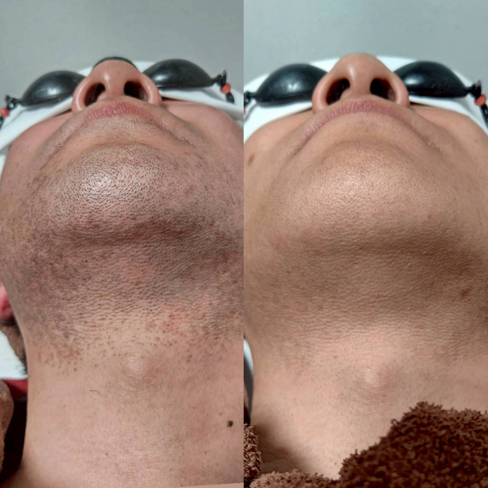

婚活・マッチングアプリで写真の印象を左右する、清潔感とヒゲ脱毛

マッチングアプリや婚活サービスを利用する方から、「プロフィール写真の印象をもっと良くしたい」というご相談をいただくことが増えています。数秒で判断されるプロフィール写真だからこそ、顔まわりの清潔感は多くの方が気にされるポイントです。
写真で第一印象を左右する「顔まわり」
アプリの写真は自然光やスマートフォンのカメラで撮影されることが多く、青ひげや剃り残しが写真の中でも目立ちやすい傾向があります。毎朝きれいに剃ったつもりでも、写真になると影が気になるという声をよく伺います。
デートの当日も、気にせず過ごせるように
プロフィール写真だけでなく、実際に会う日の身だしなみも大切です。ヒゲ脱毛を続けることで、当日の剃り残しを気にせず会話に集中できたという声もいただきます。
効果の感じ方や必要な回数には個人差がありますが、婚活を始めるタイミングで一緒にヒゲ脱毛を検討される方は少なくありません。写真や身だしなみの印象を整えたい方は、まずは無料カウンセリングでご相談ください。お電話(096-247-9488)またはLINEから承っています。